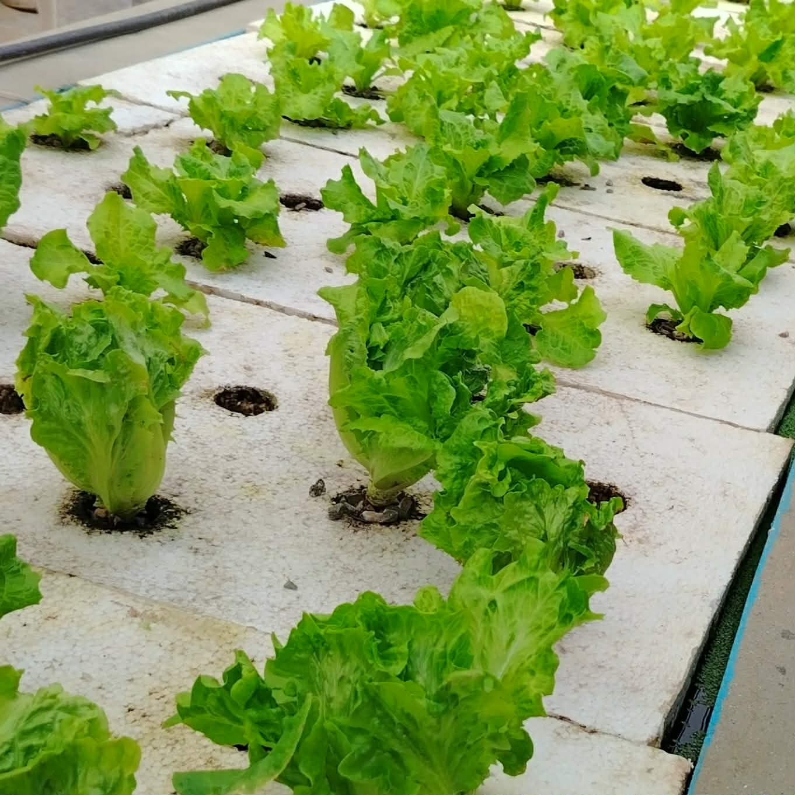
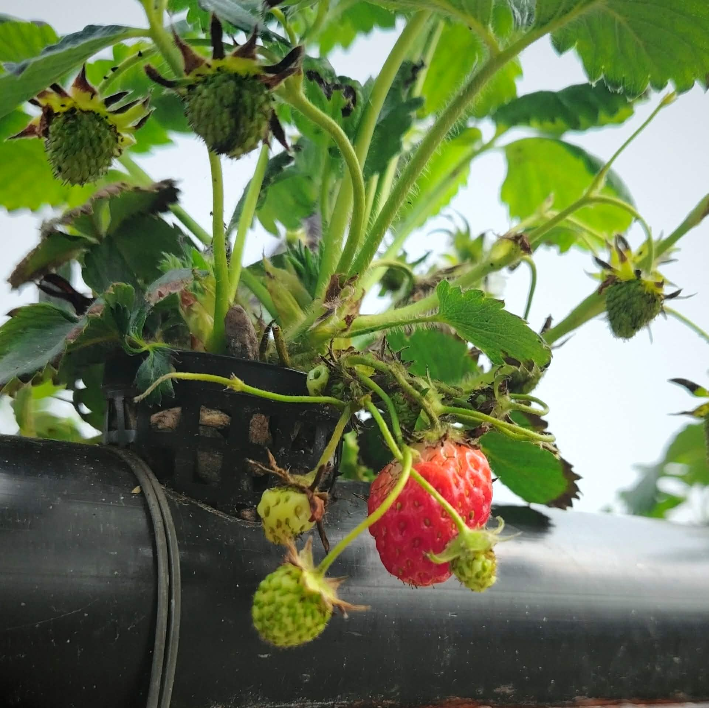
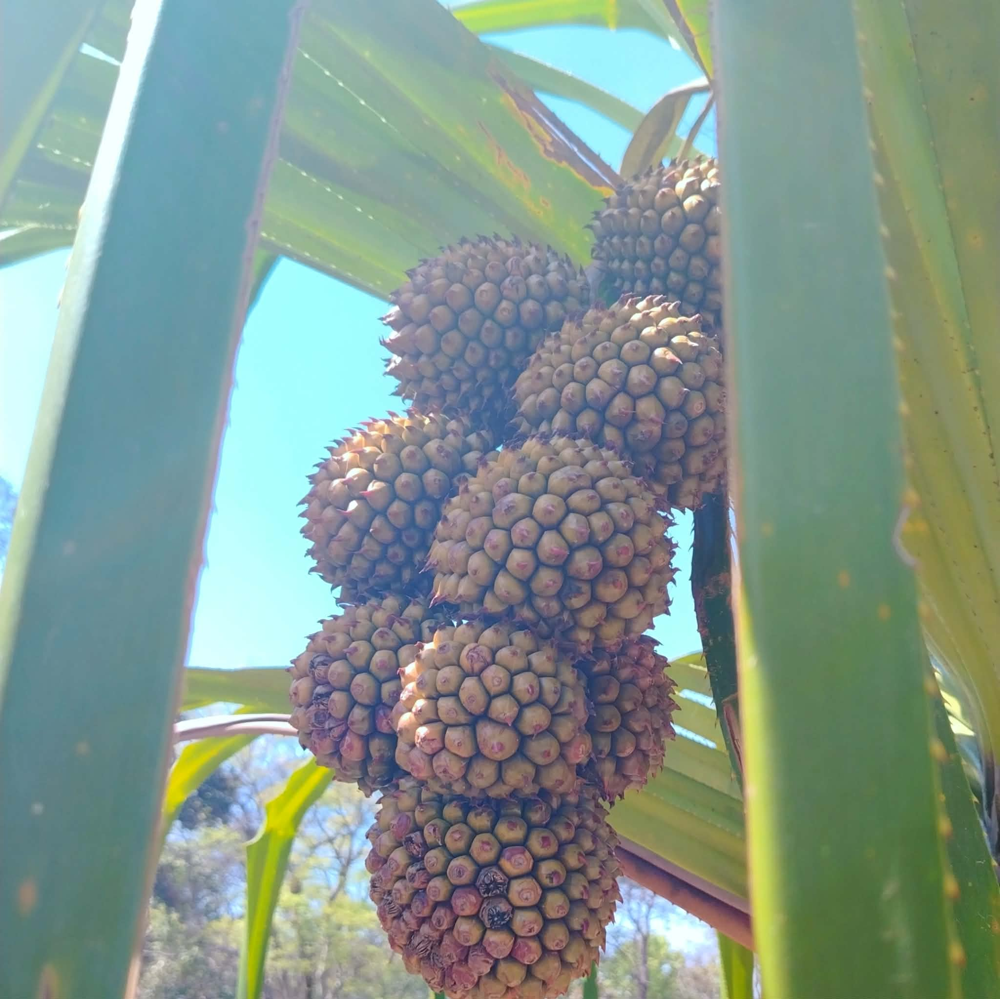
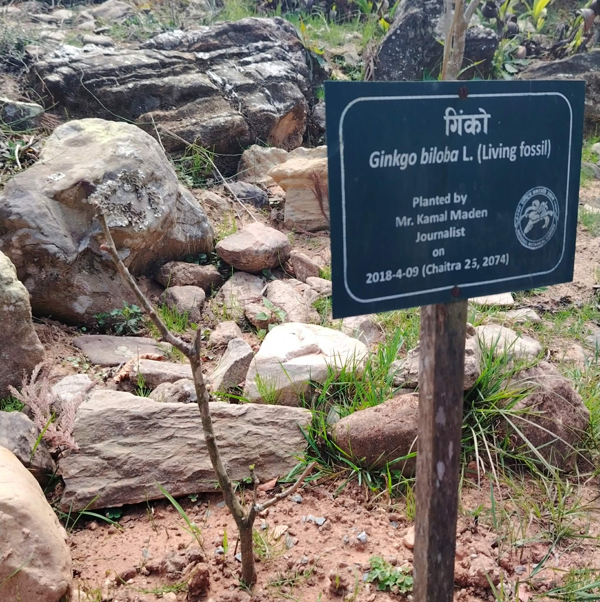
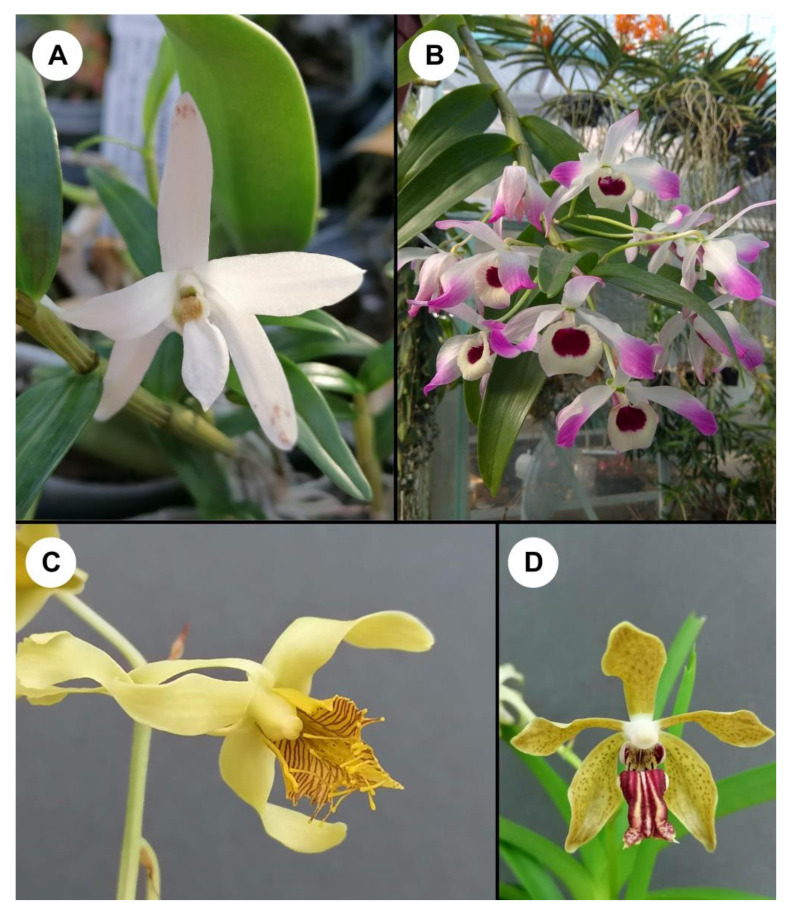

Leukemia
Leukemia begins in blood-forming tissues such as the bone marrow and involves abnormal blood cell production.





July 30, 2026
Researchers at the Annapurna Research Center, in collaboration with academic institutions, have identified ten orchid species from Nepal that exhibit promising anticancer activity against cervical, lung, and brain cancer cell lines. Rich in phenols and flavonoids, these orchids could become valuable sources of future anticancer drugs.
Read More →
RESEARCH EXPLORATION · 2026
Exploring blood cancer, its causes and treatments, and the emerging possibilities of CRISPR-based gene editing.
Explore the Research01 · THE QUESTION
Blood cancer is a group of cancers that affect the production and function of blood cells. Many blood cancers begin in the bone marrow, where blood cells are produced.
How can our understanding of genetic changes in cancer lead us toward more precise approaches to treatment?
02 · THE BASICS
Bone marrow is the soft tissue inside many bones where blood-forming cells develop.
These cells give rise to different types of blood cells, including red blood cells, white blood cells, and platelets.
In blood cancer, abnormal cells can grow uncontrollably and interfere with the production and function of healthy blood cells.

Hematopoiesis: the formation and development of blood cells.
03 · WHAT CHANGES?
A major problem in blood cancer is the abnormal production and accumulation of cells, which can interfere with normal blood-cell functions.

04 · TYPES
Leukemia begins in blood-forming tissues such as the bone marrow and involves abnormal blood cell production.
Lymphoma affects the lymphatic system and involves abnormal lymphocytes, a type of white blood cell.
Multiple myeloma is a cancer of plasma cells, immune cells that are primarily found in the bone marrow.
05 · WHAT GOES WRONG?
Cancer can develop when genetic changes interfere with the normal systems that regulate cell growth, division, and survival.
Mutations can affect genes involved in cell growth, division, and survival.
Some inherited genetic conditions can increase susceptibility to certain cancers.
Certain chemicals and high levels of ionizing radiation can increase cancer risk.
Some viral infections are associated with particular types of blood cancer.
The risk of many cancers increases as genetic changes accumulate over time.
06 · CURRENT TREATMENTS
Uses powerful drugs to destroy or slow the growth of rapidly dividing cancer cells.
Uses high-energy radiation to damage cancer cells and help control or destroy them.
Replaces damaged blood-forming stem cells with healthy cells from the patient or a donor.
T cells can be genetically engineered to recognize specific cancer cells and attack them.
THE SHIFT
This is where gene-editing technology becomes especially interesting.
07 · CRISPR TECHNOLOGY
CRISPR-based technologies allow scientists to make targeted changes to DNA.
In simple terms, a CRISPR system can be programmed to recognize a particular DNA sequence and modify it.
This technology has opened new possibilities for studying genetic disease and developing potential therapies.
Conceptual animation of CRISPR gene editing.
Identify a specific DNA sequence.
Direct the CRISPR system toward the target.
Make a targeted genetic change.
08 · CRISPR × BLOOD CANCER
Researchers are investigating ways to genetically modify blood-forming stem cells for potential therapeutic applications.
Gene editing can be used to investigate ways of modifying immune cells such as T cells to recognize cancer more effectively.
CRISPR-based engineering is being studied as a way to develop more precisely engineered cellular immunotherapies.

CELLULAR ENGINEERING
CAR-T therapy demonstrates how cells of the immune system can be engineered to recognize and attack cancer.
09 · CURRENT PROBLEMS
Gene-editing systems can sometimes make unintended changes at locations other than the intended target.
Delivering gene-editing machinery to the correct cells safely and efficiently remains a major challenge.
Editing cells directly inside the body introduces additional biological and technical challenges.
Advanced gene and cell therapies can require highly specialized manufacturing and infrastructure.
10 · FUTURE TECHNOLOGY
Base editing is being developed to make specific changes to individual DNA bases without using the same type of DNA cutting approach as conventional CRISPR-Cas systems.
Prime editing is an emerging gene-editing approach designed to make more precise changes to DNA.
Researchers are exploring approaches that can modify multiple genetic targets in a controlled way.
THE LONG-TERM QUESTION
11 · MY RESEARCH NOTES
Blood cancer is not one single disease. Different types involve different cells, tissues, and biological mechanisms.
The possibility of using genetic engineering to modify immune cells and potentially change how cancer is recognized and attacked.
How can scientists deliver gene-editing systems precisely to the right cells while minimizing unintended effects?
THE RESEARCH DOESN'T END HERE
This exploration is part of my continuing interest in biotechnology, genetics, cancer biology, and emerging therapeutic technologies.
12 · REFERENCES
Scientific literature, research papers, and institutional resources will be added here as this research exploration develops.
Research note: This page is an educational exploration of blood cancer and emerging gene-editing technologies. Experimental approaches described here should not be interpreted as established clinical treatments.